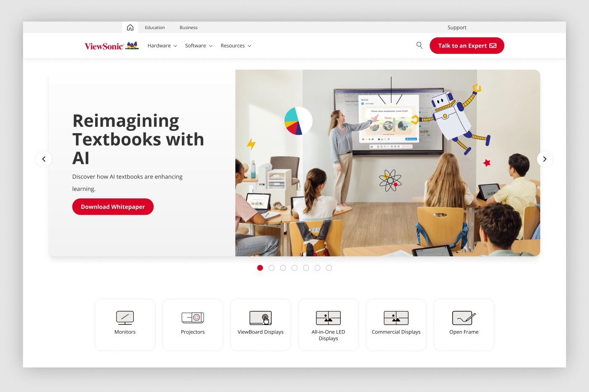

Partial snapshot, and a scope note. This run covers the /global site (a Bootstrap/UIkit build, distinct from the /region Magento store, which is excluded). Performance figures are render-observed (browser network panel) and are not Lighthouse scores or Core Web Vitals — PSI was unreachable. Design-system token drift against Figma is not measured: the linked files expose token names but not resolved values via available tooling. No numbers were estimated to fill these gaps.
Accessibility, demonstrated
What is accessibility?
Building the site so everyone can use it, including people with disabilities: those who are blind or low-vision, deaf or hard of hearing, or who navigate by keyboard rather than a mouse. In practice that means things like readable colour contrast, text descriptions for images, and controls that work without a mouse. Done well, it makes the site easier for everyone.
The European Accessibility Act (EAA)
A new EU law, in force since June 2025, that makes digital accessibility a legal requirement for many products and services offered in the EU, websites and online stores included. It sets one common standard across EU countries, and organisations that fall short can face complaints and fines. In short: accessibility is no longer just good practice, it is the law.
Two WCAG 2.2 AA checks behind this review, shown with the real design system: the primary button's colour contrast, and a keyboard focus state on the live homepage.
Colour contrastWCAG 1.4.3
1.6:1Fail ✗Low-contrast grey · #cfcfcf
A washed-out grey button (~1.6:1) is unreadable and fails AA outright. Switch to the real button red #db0025 and it jumps to 5.2:1, comfortably clear of the 4.5 line.
Keyboard focus — on the real homepageWCAG 2.4.7 / 2.4.11

Tab ⇥ steps through the header and hero, and the design system's real focus ring (light-blue #cfe9f7) tracks each control: the Hardware / Software / Resources menus, search, and the two calls to action.
🔒
Page identifiers redacted.
This reviewed a live corporate site, so the specific page behind each finding is
blurred and the underlying URLs replaced. Everything that shows the method is left
readable: the severity of each finding, whether it was measured deterministically or
assessed by judgement, and the finding itself.
Critical axe violations in the sample: image-alt (9 nodes) and aria-required-children (6) Measured
9 / 10
Pages with the serious link-name violation Measured
15–32
Images with no alt attribute, per page Measured
6 / 10
Pages whose <title> is just "Company" Measured
2 / 10
Pages with no <h1> at all Measured
6–41
Contrast checks axe could not resolve (over imagery), per page Needs manual
53–220
Interactive targets under 24×24px, per page Assessed
n/a
Lighthouse / Core Web Vitals Not measured
The one thing to fix this week
Two cheap, high-leverage template fixes: (1) add alt text to content images — it is missing on 15–32 images per page and is a critical violation; and (2) add accessible names to the shared navigation icon links and the UIkit carousel arrows (.uk-position-center-left/right, href="#"), which is the serious violation on 9 of 10 pages. Both live in shared components/templates, so each fix clears many instances at once.
Accessibility — automated axe-core 4.10.2
Run live against each rendered DOM, tags wcag2a/aa, wcag21a/aa, wcag22aa (axe injected via fetch+eval because the /global CSP blocks external script tags). Automated tooling catches only a portion of WCAG issues; the heuristic section covers what it cannot.
◆ CRITICALMeasuredContent images without alt text — image-alt (9 nodes on programme-a); 15–32 images per page missing the attribute entirely
What
axe image-alt (critical) fired with 9 nodes on /education/page-23. Separately, a DOM count shows 15–32 <img> with no alt attribute on every sampled page. Example: education card images under .col-xl > .img-fluid (assetFile/global/img/.../Grad…).
Why
WCAG 1.1.1 Non-text Content (A). Screen-reader users get a filename or nothing for meaningful imagery.
Fix
Author meaningful alt for content images; explicit empty alt="" for decorative ones. Enforce a required alt field in the CMS/component so new content can't ship without it.
Confidence
Deterministic for the 9 axe nodes; measured DOM counts for the rest (some may be intentionally decorative — needs a content pass to split).
On /global/group-01/group-04/education, axe flagged aria-required-children (critical, 6 nodes): an element with a composite ARIA role (e.g. list/tablist/menu) lacks the child roles that role requires.
Why
WCAG 1.3.1 (A) / 4.1.2 (A). Broken role relationships mislead assistive tech about structure.
Fix
Either supply the required child roles or remove the container role and rely on native semantics. Likely a UIkit/Bootstrap widget with a hand-added role.
Confidence
Deterministic — axe rule + node count.
Owner
Engineering.
▲ HIGHMeasuredLinks with no accessible name — link-name (serious) on 9/10 pages, 1–19 nodes each
What
Serious link-name on every page except the Display index. Node counts: programme-a 3, product-g 19, product-i 3, product-e 8, tool-a 3, business 1, solutions-b 1, product-d 11, product-f 12. Two recurring sources: header/nav icon links (.nav-link with a Font Awesome <i> and no text) and UIkit carousel controls (.uk-position-center-left/right, href="#").
Why
WCAG 2.4.4 Link Purpose (A) and 4.1.2 Name, Role, Value (A).
Fix
Add aria-label (or visually-hidden text) to the nav icon links and slider arrows in the shared components. Slider arrows should also be real <button>s, not href="#" anchors.
Confidence
Deterministic — rule + node targets captured.
Owner
Engineering (shared nav + carousel component).
▲ HIGHMeasuredColour contrast — confirmed fails on product-g (3), plus 6–41 unresolved checks per page
What
axe reported 3 confirmed color-contrast violations (serious) on /education/group-01/page-15. On top of that, every page carries a large "incomplete" contrast bucket (6 to 41 nodes) where axe could not compute contrast — typically text over photographic backgrounds.
Why
WCAG 1.4.3 Contrast (Minimum) AA. The confirmed three are violations; the incomplete buckets are unverified risk, not passes.
Fix
Fix the three confirmed nodes. Then run a manual/contrast-tool pass over hero and overlay text, or enforce a scrim token so text-on-image contrast is guaranteed.
Confidence
Deterministic for the 3; needs manual for the incomplete buckets.
■ MEDIUMMeasuredOther serious/ARIA issues: frame-title, aria-prohibited-attr, plus video without captions
What
frame-title (serious, tool-a — an iframe without a title), aria-prohibited-attr (serious on solutions-b; incomplete elsewhere), and video-caption in the incomplete bucket on product-g and tool-a (a video that may lack captions).
Why
WCAG 4.1.2 (A), 2.4.1 (A) for frame titles; 1.2.2 Captions (A) for video.
Fix
Title every iframe; remove ARIA attributes not permitted on their element's role; confirm captions on any informational video.
Confidence
Deterministic for the named violations; verify the caption check.
Human judgement over readable markup and computed layout. Concerns at named criteria, not confirmed violations, and not tested with assistive tech.
■ MEDIUMAssessedMissing / zero H1: 2 of 10 pages have no H1; heading counts swing 25–251
What
/global/group-01/page-17 and /education/page-23 render zero <h1>. Heading totals range from 25 to 251 (the Display index has 251), with up to 5 level-skips per page.
Why
WCAG 1.3.1 (A) and 2.4.6 Headings and Labels (AA). A missing H1 and erratic levels weaken the outline screen-reader users rely on.
Fix
Exactly one H1 per page; bring heading levels into a sensible order; question whether the 251-heading index needs that many semantic headings.
Confidence
Heuristic — counts measured; intent to confirm.
■ MEDIUMAssessedTarget size: 53–220 interactive elements under 24×24px per page
What
Sub-24px interactive boxes per page: 53–62 on most templates, 220 on the Display index. Includes dense card grids, filter controls and icon links.
Why
WCAG 2.2 2.5.8 Target Size (Minimum), AA. Risk, not a confirmed fail — 2.5.8 exempts inline-text links and adequately spaced targets, which the raw count does not net out.
Fix
Audit the densest controls first (Display index, product grids). Hit 24px or ensure spacing offsets. Confirm against the exceptions before ticketing each.
Confidence
Heuristic — bounding-box measurement; exception logic needs a human pass.
■ MEDIUMAssessedForm fields without a programmatic label (up to 14 on several pages)
What
14 unlabelled inputs on six pages, 1 on the rest. Concentrated in a shared component (likely the mega-nav search / region / filter cluster).
Why
WCAG 1.3.1 (A), 3.3.2 (A), 4.1.2 (A). Placeholders are not labels.
Fix
Label each control via <label for> or aria-label. Fix the shared component once. Confirm which of the 14 are genuine user inputs versus hidden/utility fields.
Confidence
Heuristic — detector counts fields with no label/aria/wrapping label.
● LOWAssessedPositive baseline: lang set, skip link present on every page
What
All 10 pages set <html lang="en"> (3.1.1) and expose a skip link (2.4.1). Good foundations.
No scores or Core Web Vitals here — PSI/Lighthouse was unreachable. Figures are observed from a single live render. Transfer bytes are cache-dependent; request counts, image weight and head-blocking counts are the stable signals. The /global build is modern at the head level (0 render-blocking sync scripts, 2–3 stylesheets) — the performance story is images, not blocking scripts.
■ MEDIUMMeasured (render-observed)Heavy image payloads and long load events on image-rich templates
What
Observed image transfer up to ~3.0MB (product-i) and ~0.6MB (product-g); load events of 17.9s (product-g) and 8.6s (product-f) this session. 40–140 images per page.
Why
Large, numerous images are the dominant cost on these pages. Load-event timings are single-render and network-variable, so treat as indicative, not a benchmark.
Fix
Right-size and compress hero/card imagery, serve modern formats, confirm lazy-loading below the fold. Validate with a real Lighthouse run — do not assume a number.
Every /global page shipped zero synchronous head scripts and only 2–3 stylesheet links — markedly leaner than the /region store. A genuine strength of this build.
Not available this run; the PSI API returned empty/timeout via the only permitted fetch route.
To get real numbers
Run PSI from a reachable environment (web.dev/measure, PSI API in CI, or local lighthouse CLI) against this URL set. Field CWV needs CrUX/RUM, not a single render.
A measured comparison against the governing Figma token set could not be completed; no values were invented. What can be reported is the site's internal consistency, measured from computed styles.
■ MEDIUMMeasured (internal)Type scale is internally inconsistent across /global templates
What (measured)
Body is consistently Open Sans, but base size and the heading scale drift between templates: body 16px on most pages, 14px on the Display index and product-e; H1 rendered at 48px, 39.9px, 53.2px and 39.9px on different pages; H2 alternates between weight 700 and 500, sizes 24.64–42px, and colour between #222222, #404041 and #000000.
Why it matters
Fractional, per-template heading sizes and mixed weights/colours point to fluid type applied without a shared token contract. Even before comparing to Figma, the scale is not coherent across the sampled pages.
Fix
Pin the heading ramp and body base to design tokens; remove per-template overrides. Then compare against the DS type tokens once values are available.
Confidence
Measured internal inconsistency; drift vs Figma not measured.
■ INFONot measuredDS structure confirmed; token hex/size values could not be resolved
Confirmed
Both governing systems exist: "the business design system" and "the education design system", each with a 1-2. Semantic Color collection (brand color/Blue, Red, Sky, Gray, Brown) on a shared "DS" foundation, alongside the other four product-line systems.
Blocker
Design-system search returns variable names only; resolving values needs get_variable_defs with node IDs, and the linked Business file exposes only a "Cover" page (tokens live in separate published libraries with no node-specific URL supplied).
To complete
Provide a node-specific Figma URL into each system's colour/type token frames, or an exported tokens.json. Then drift becomes measurable. Any measured drift must then be scoped by rollout status before being called a bug.
Confidence
Not measured.
Design-system component parity Assessed
■ MEDIUMAssessedShared nav + UIkit carousel components carry the accessibility debt
What
The recurring serious issues cluster in shared components: the header/nav icon links (no accessible name) and the UIkit carousel arrows (href="#" anchors, no label). The ARIA-required-children and prohibited-attr issues also look like hand-roled widgets rather than DS-composed components.
Read
These read as bespoke or third-party (UIkit/Bootstrap) widgets sitting outside the design system rather than DS primitives with accessibility baked in. Rebuilding them as DS components with required label slots closes the a11y and parity gaps together.
Fix
Before proposing new Figma components, check whether DS icon-button and carousel/slider primitives already exist to extend. If they exist and are accessible, the gap is implementation, not the system.
Confidence
Heuristic — not a measured component diff. No Figma edits proposed or made.
Content / IA Measured
▲ HIGHMeasured6 of 10 pages have a placeholder <title> of just "Company"
What
/global/business, /business/group-05/page-14, /products/group-03/page-21, /business/group-06/page-20, /products/group-07/education and /education/page-23 all return <title>Company</title>. The other four have proper descriptive titles (e.g. "Commercial Displays for Business Communication | Company Global").
Why
Damages SEO, the browser-tab/scan experience, and WCAG 2.4.2 Page Titled (A). Inconsistent generation suggests a template/data gap, not authoring choice.
Fix
Generate a descriptive, consistent title per page at the template level (e.g. Page — Section — Company). Treat the missing-title pages as a bug, not copy work.
Confidence
Measured — titles captured per page.
Owner
Engineering + content/SEO.
CRO / UX heuristics heuristic, not measured
No analytics access. Nothing here is a measured conversion claim; each is grounded in a recognised usability principle and should be validated with data or testing before prioritising.
● LOWHeuristicThe Display index (251 headings, 220 small targets) likely overwhelms the scan
Observation
/global/group-01/page-17 carries 251 headings, 140 images and 220 sub-24px targets, with no H1.
Principle
Hick's law / visual hierarchy — a dense, flat index slows the choice and the scan, and the missing H1 removes the anchor.
Suggested
Introduce clear primary grouping, a real H1, and progressive disclosure for the long tail. heuristic, not measured
● LOWHeuristicUnlabelled icon links and carousel arrows cost clarity for everyone
Observation
The same nav icons and slider arrows behind the link-name violation give sighted users no hover/affordance text either.
Principle
Recognition over recall — labelled affordances reduce hesitation for all users.
Suggested
The accessibility label fix doubles as a usability win. heuristic, not measured
● LOWHeuristicHeavy hero imagery may delay perceived load on entry pages
Observation
Multi-megabyte image payloads on landing/category pages (render-observed).
Principle
Perceived performance affects bounce on first impression.
Suggested
Prioritise above-the-fold image optimisation; confirm impact with real performance data. heuristic, not measured
Per-page data Measured
All values measured live on 2026-06-09 against /global (+ /education); /region excluded. "missAlt" = images with no alt attribute; "<24px" = interactive targets under 24×24px; "noLabel" = inputs without a programmatic label; "axe viol." = confirmed violations (key rule ids); "cc?" = contrast checks axe could not resolve; "req" = requests; "load(ms)" = single-render load event (indicative, not Lighthouse).
Page (stratum)
H1
Headings
Skips
Imgs
missAlt
<24px
noLabel
axe viol.
cc?
req
load(ms)
Title
business (B)
1
42
3
94
24
53
14
link-name×1
18
81
6774
"Company"
business/group-05/page-14 (B)
1
37
3
72
23
53
14
aria-prohibited, link-name
29
100
6432
"Company"
business/group-01/group-02/page-01 (B)
1
128
2
78
23
53
14
link-name×11
7
55
7063
descriptive ✓
products/group-03/page-21 (B)
1
82
1
90
15
56
1
link-name×12
16
45
8619
"Company"
business/group-06/page-20 (B)
1
31
1
57
24
55
14
link-name, frame-title
11
67
—*
"Company"
education/group-01/page-15 (E)
1
86
2
105
15
62
14
link-name×19, contrast×3
41
95
17860
descriptive ✓
products/page-17 (E)
0
251
1
140
16
220
1
none
10
48
3671
descriptive ✓
products/group-07/education (E)
1
25
2
41
15
56
1
link-name×8
6
63
5676
"Company"
products/group-04/education (E)
1
32
5
48
15
56
1
aria-required-children×6, link-name×3
20
81
4569
descriptive ✓
education/page-23 (E)
0
40
1
55
32
59
14
image-alt×9, link-name×3
33
65
6000
"Company"
* load event not captured on this page in-session. Critical violations are image-alt (programme-a) and aria-required-children (product-i).
Method, sources & limitations
How each section was produced
Accessibility (automated): axe-core 4.10.2 injected (fetch+eval, to satisfy the /global CSP) into each rendered DOM; WCAG 2.0/2.1/2.2 A+AA rule tags. Deterministic where a rule id is cited.
Accessibility (heuristic): human review of readable markup and computed layout. Concerns at named WCAG 2.2 criteria, not confirmed violations; not tested with assistive technology.
Performance: render-observed from the browser network panel and Performance API on a single render. Not Lighthouse, not Core Web Vitals, not a score. PSI was unreachable.
DS token drift: internal consistency measured from computed styles; Figma token values unresolved, so drift-vs-system is not measured (not estimated).
DS component parity & CRO/UX: heuristic, grounded in usability principles. No analytics; no conversion claims.
Scope, coverage & honesty notes
Scope corrected: this run is /global (and the /education and /business paths it redirects to). The /region store is excluded per instruction.
10-page stratified sample (5 Business, 5 Education), spanning landing, solution, category, product and software templates. Representative of the shared /global templates, not full coverage. For true site-wide coverage, feed a crawler/CI export into PSI + axe (the /global sitemap was empty, so URLs were discovered by crawling the live nav).
/global is a Bootstrap/UIkit build, structurally different from the /region Magento store; findings here do not transfer to /region.
No Figma writes were made or proposed. No crawl outside the agreed set. robots.txt blocks Claude site-wide; this ran as an explicitly owner-authorised internal audit.
Snapshot generated 2026-06-09. Point-in-time, not a live feed. Re-run to refresh.